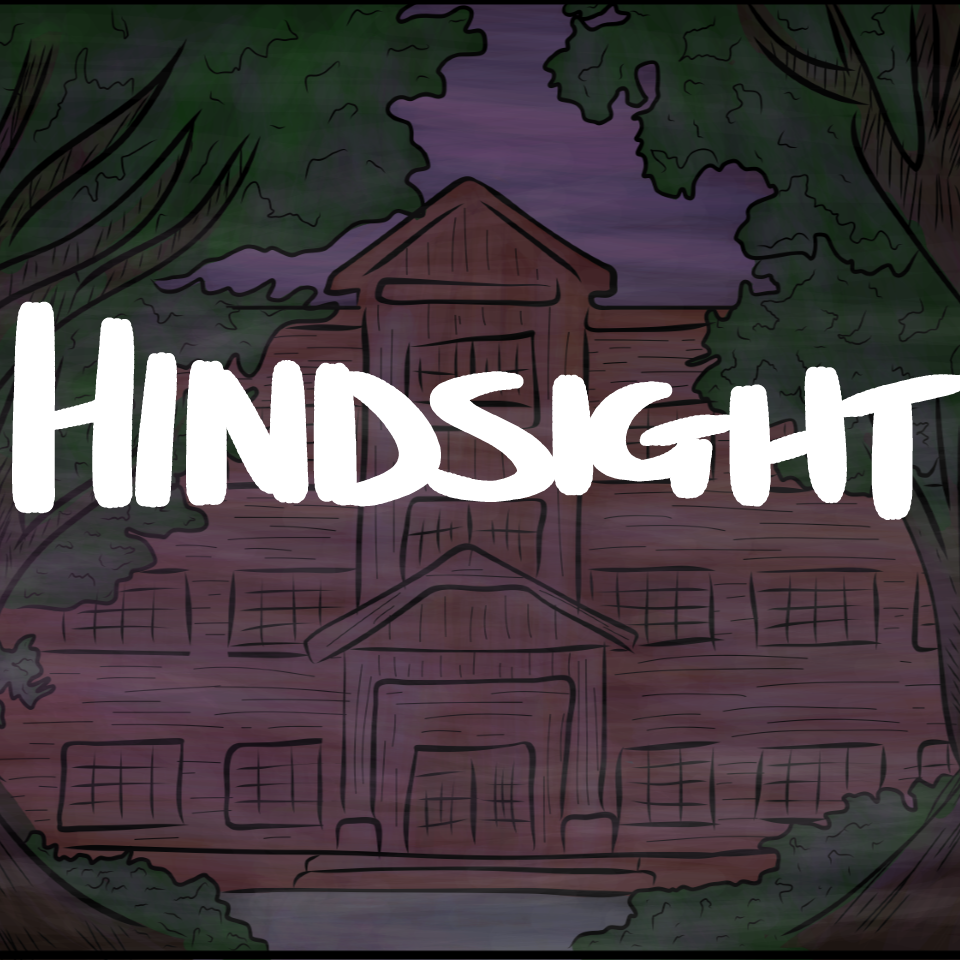
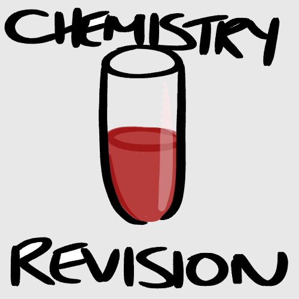
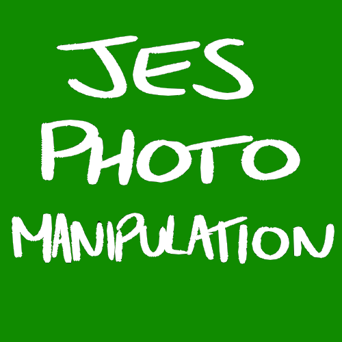

Hi, I'm Lauren. I have interests in video games, technology and rock climbing. Currently, I'm a 2nd-year student at Newcastle Universty studying Computing Science. I am also the Social Secretary of the Newcastle University Gaming Society and a member of the Tyneside Guardians; which is an Overwatch team based in Gateshead who are currently taking part in the Championship League of the Belong Arena Clash.
I have worked mainly with Java, Python3, HTML/CSS and Visual Basic; however, I also have experience with ARMv7 Assembly Language, JavaScript and JES.
Click the images below to see examples of my work outside of university!
  Being the Social Secretary of Newcastle University Gaming Society means that I have to keep everyone up to date with current affairs in the society. This means I control all the social media for the society.
I am currently the captain of an esports team. This means I have to make quick decisions under a lot of pressure and I have to make sure I am very clear when communicating with the other members of the team. When I became captain of the team, I had to take on extra roles; for example, I had to be motivating and reassure members of the team when something didn't go to plan. I also have to pay attention to the strengths and weaknesses so that I can determine what roles to give each member of the team. I have to make sure everyone works together as a team because, if we don't, it means that we're less successful in what we're trying to do.
Email: l.pugh@ncl.ac.uk